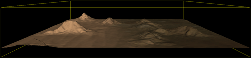
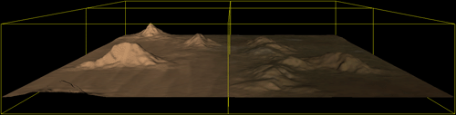
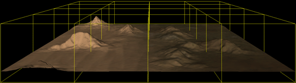
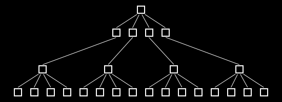
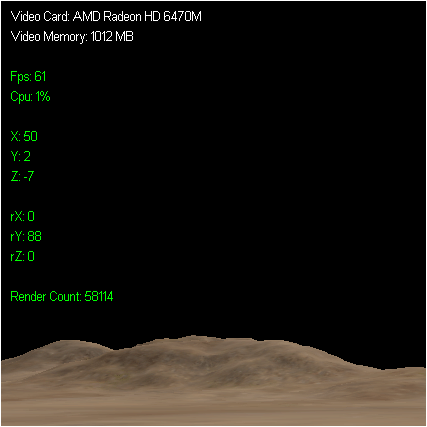

Tutorial 5: Quad Trees

This terrain tutorial will cover how to implement quad trees using DirectX 11 and C++. The code in this tutorial is based on the previous tutorial.
Before I get into the explaination of quad trees I want to mention that this is an optimization technique. Generally I don't like to cover optimization techniques until the very end because you should not be optimizing anything until you get to that point. However in this case you need to understand how the optimization technique works so that you design your terrain engine with certain principles that allow you to optimize it using quad trees once everything is complete. Also it is easier to demonstrate how the quad tree code should work while the terrain code is still in a simple form.
So far to render terrain we have generally put the entire terrain information into a single buffer and had the graphics card render the entire terrain each frame regardless if we could see all of it or not. This is obviously inefficient and can hamper the performance of the application so we need to look for a way to draw only what the user is currently viewing. Fortunately there are many different space partitioning algorithms that exist which can help us reduce the number of polygons that we are drawing each frame. Most space partitioning algorithms work by dividing a scene up into smaller sections and only rendering those sections that can be seen by the user. One of the better space partitioning methods that works uniquely well with terrain data is call Quad Tree Partitioning.
How quad trees work is that they divide the terrain into four even squares (quads). Then each quad is further divided into four more evenly sized quads. This division keeps going until we meet a certain criteria that we put in place. In this tutorial the criteria will be the maximum number of triangles allowed inside a quad. The maximum value will be set to 10,000 so each quad will keep dividing until it finally has less that 10,000 triangles inside it.
To illustrate how the quad tree algorithm works we first start with a quad that encompasses the entire terrain:

Then we divide it into four quads and check if each of those quads has more than 10,000 triangles in it or not:

If the quad has more than 10,000 triangles in it then we divide that quad into four evenly sized quads and check again if each of the new four quads has less than 10,000 triangles in it or not:

Once each of the quads in the entire quad tree has less than 10,000 triangles in it we are done dividing the terrain up into sections. Now for each quad we figure out which triangles belong inside it and create a vertex buffer for each quad and fill the vertex buffers with the triangles for just that quad. The final result is that we have basically divided the terrain up into a number of vertex buffers instead of using a single vertex buffer for the entire thing. And because each quad is a cube with a known location and size we can use the FrustumClass to cull any of the cubes we are not viewing. This is where we start to gain major speed in rendering our terrain.
The next aspect of the quad tree algorithm is that we maintain a tree structure so that the quads are linked to each other in a parent child relationship such as the following:

So just like the three terrain pictures above the diagram uses the top node of the tree to represent the entire terrain. The second tier of child nodes represents the first four quads that the parent terrain was split into. The third tier represents the four child quads that each of the four parent quads got split into. And from there the tree will continue to grow in the same fashion until it has met the criteria of when to or when not to split each quad (in this example it is by 10,000 triangles maximum per quad).
Now because it is a tree structure with a parent child relationship we can use this to our advantage and gain even more speed when culling the terrain. For example we start at the first node and check if it can be seen or not. If we can't see the first node then the terrain can't be seen and we don't render anything. This is a very fast check which has enabled us to exclude rendering the entire terrain to the video card. However if we can see the first node then we go down the tree.
Next we check to see if we can view any of the four child nodes which represent the first four quads the terrain was split into. For each quad we can't see we can then exclude checking any of its child nodes, this is where the node tree nets us incredible speed through this quick method of elimination. The quads that can be viewed we then check their child nodes and continue down the viewable part of the tree until we have a final list of child nodes at the bottom of the tree that can be viewed. We then only draw this reduced final list of child nodes.
One final note is that height does not matter in a quad tree. We are only concerned with the X and Z coordinates for culling since we are assuming the user will generally be slightly above the terrain most of the time.
Framework
The frame work for this tutorial is the same as the previous tutorial except that we add a QuadTreeClass and FrustumClass object to it. The FrustumClass is the same one as the DirectX 11 Frustum Culling tutorial. We will start by first looking at the new QuadTreeClass.
Quadtreeclass.h
//////////////////////////////////////////////////////////////////////////////// // Filename: quadtreeclass.h //////////////////////////////////////////////////////////////////////////////// #ifndef _QUADTREECLASS_H_ #define _QUADTREECLASS_H_
For this tutorial we will use 10,000 triangles per quad as the criteria for splitting nodes in the quad tree. It is defined here as a global for easy manipulation. Note that making this number too low will cause the tree to be incredibly more complex and hence will exponentially increase the time it takes to construct it.
///////////// // GLOBALS // ///////////// const int MAX_TRIANGLES = 10000;
The QuadTreeClass will also need to interface with the TerrainClass, FrustumClass, and TerrainShaderClass so the headers for each are included here.
///////////////////////
// MY CLASS INCLUDES //
///////////////////////
#include "terrainclass.h"
#include "frustumclass.h"
#include "terrainshaderclass.h"
////////////////////////////////////////////////////////////////////////////////
// Class name: QuadTreeClass
////////////////////////////////////////////////////////////////////////////////
class QuadTreeClass
{
private:
The QuadTreeClass will require the same definition of the VertexType that is used in the TerrainClass since it will be taking over the storing and rendering of the terrain vertex information.
struct VertexType
{
D3DXVECTOR3 position;
D3DXVECTOR2 texture;
D3DXVECTOR3 normal;
};
Each node in the quad tree will be defined as follows with position, size, triangle count, buffers, and four child nodes:
struct NodeType
{
float positionX, positionZ, width;
int triangleCount;
ID3D11Buffer *vertexBuffer, *indexBuffer;
NodeType* nodes[4];
};
public:
QuadTreeClass();
QuadTreeClass(const QuadTreeClass&);
~QuadTreeClass();
bool Initialize(TerrainClass*, ID3D11Device*);
void Shutdown();
void Render(FrustumClass*, ID3D11DeviceContext*, TerrainShaderClass*);
int GetDrawCount();
private:
void CalculateMeshDimensions(int, float&, float&, float&);
void CreateTreeNode(NodeType*, float, float, float, ID3D11Device*);
int CountTriangles(float, float, float);
bool IsTriangleContained(int, float, float, float);
void ReleaseNode(NodeType*);
void RenderNode(NodeType*, FrustumClass*, ID3D11DeviceContext*, TerrainShaderClass*);
private:
int m_triangleCount, m_drawCount;
The QuadTreeClass will require a list of the vertices from the TerrainClass object for building the quad tree. The list will be stored in the following array.
VertexType* m_vertexList;
The parent node is the root of the quad tree. This single node will be expanded recursively to build the entire tree.
NodeType* m_parentNode; }; #endif
Quadtreeclass.cpp
//////////////////////////////////////////////////////////////////////////////// // Filename: quadtreeclass.h //////////////////////////////////////////////////////////////////////////////// #include "quadtreeclass.h"
The class constructor initializes the vertex list and quad tree parent node to null.
QuadTreeClass::QuadTreeClass()
{
m_vertexList = 0;
m_parentNode = 0;
}
QuadTreeClass::QuadTreeClass(const QuadTreeClass& other)
{
}
QuadTreeClass::~QuadTreeClass()
{
}
bool QuadTreeClass::Initialize(TerrainClass* terrain, ID3D11Device* device)
{
int vertexCount;
float centerX, centerZ, width;
The first thing the QuadTreeClass has to do is get all the information it will need from the TerrainClass. It first gets the number of vertices in the terrain, then it uses that value to create a vertex list which is then sent into the TerrainClass and filled with the terrain vertex information.
// Get the number of vertices in the terrain vertex array.
vertexCount = terrain->GetVertexCount();
// Store the total triangle count for the vertex list.
m_triangleCount = vertexCount / 3;
// Create a vertex array to hold all of the terrain vertices.
m_vertexList = new VertexType[vertexCount];
if(!m_vertexList)
{
return false;
}
// Copy the terrain vertices into the vertex list.
terrain->CopyVertexArray((void*)m_vertexList);
Once the vertex list is filled with the terrain information it can calculate the dimensions of the parent node and start the recursive method of building the quad tree.
// Calculate the center x,z and the width of the mesh.
CalculateMeshDimensions(vertexCount, centerX, centerZ, width);
// Create the parent node for the quad tree.
m_parentNode = new NodeType;
if(!m_parentNode)
{
return false;
}
// Recursively build the quad tree based on the vertex list data and mesh dimensions.
CreateTreeNode(m_parentNode, centerX, centerZ, width, device);
Once the quad tree is built the vertex list is no longer needed.
// Release the vertex list since the quad tree now has the vertices in each node.
if(m_vertexList)
{
delete [] m_vertexList;
m_vertexList = 0;
}
return true;
}
void QuadTreeClass::Shutdown()
{
Shutdown calls the ReleaseNode function which recursively traces down the tree and removes all the nodes.
// Recursively release the quad tree data.
if(m_parentNode)
{
ReleaseNode(m_parentNode);
delete m_parentNode;
m_parentNode = 0;
}
return;
}
The Render function calls RenderNode which goes through the tree and renders nodes using the frustum object which determines the node visibility. The m_drawCount variable must be initialized to zero before the rendering is done as it will be incremented for each node drawn for all the triangles in each node.
void QuadTreeClass::Render(FrustumClass* frustum, ID3D11DeviceContext* deviceContext, TerrainShaderClass* shader)
{
// Reset the number of triangles that are drawn for this frame.
m_drawCount = 0;
// Render each node that is visible starting at the parent node and moving down the tree.
RenderNode(m_parentNode, frustum, deviceContext, shader);
return;
}
GetDrawCount returns the total number of triangles that were drawn in the previous Render function call.
int QuadTreeClass::GetDrawCount()
{
return m_drawCount;
}
The CalculateMeshDimensions function determines the physical quad size of the parent node. It goes through all the vertices in the terrain vertex list and uses them to calculate the center of the terrain as well as the absolute maximum width of the terrain. These values will then later be used to create the size of the parent node.
void QuadTreeClass::CalculateMeshDimensions(int vertexCount, float& centerX, float& centerZ, float& meshWidth)
{
int i;
float maxWidth, maxDepth, minWidth, minDepth, width, depth, maxX, maxZ;
// Initialize the center position of the mesh to zero.
centerX = 0.0f;
centerZ = 0.0f;
// Sum all the vertices in the mesh.
for(i=0; i<vertexCount; i++)
{
centerX += m_vertexList[i].position.x;
centerZ += m_vertexList[i].position.z;
}
// And then divide it by the number of vertices to find the mid-point of the mesh.
centerX = centerX / (float)vertexCount;
centerZ = centerZ / (float)vertexCount;
// Initialize the maximum and minimum size of the mesh.
maxWidth = 0.0f;
maxDepth = 0.0f;
minWidth = fabsf(m_vertexList[0].position.x - centerX);
minDepth = fabsf(m_vertexList[0].position.z - centerZ);
// Go through all the vertices and find the maximum and minimum width and depth of the mesh.
for(i=0; i<vertexCount; i++)
{
width = fabsf(m_vertexList[i].position.x - centerX);
depth = fabsf(m_vertexList[i].position.z - centerZ);
if(width > maxWidth) { maxWidth = width; }
if(depth > maxDepth) { maxDepth = depth; }
if(width < minWidth) { minWidth = width; }
if(depth < minDepth) { minDepth = depth; }
}
// Find the absolute maximum value between the min and max depth and width.
maxX = (float)max(fabs(minWidth), fabs(maxWidth));
maxZ = (float)max(fabs(minDepth), fabs(maxDepth));
// Calculate the maximum diameter of the mesh.
meshWidth = max(maxX, maxZ) * 2.0f;
return;
}
CreateTreeNode is the function that builds the quad tree. Note that it is recursive and will call itself numerous times. It starts with the parent node and then calls itself for each child node, and for each child node it calls itself for their children nodes and so forth. It builds the entire node tree and at the same time it loads the vertex data into each bottom child node.
void QuadTreeClass::CreateTreeNode(NodeType* node, float positionX, float positionZ, float width, ID3D11Device* device)
{
int numTriangles, i, count, vertexCount, index, vertexIndex;
float offsetX, offsetZ;
VertexType* vertices;
unsigned long* indices;
bool result;
D3D11_BUFFER_DESC vertexBufferDesc, indexBufferDesc;
D3D11_SUBRESOURCE_DATA vertexData, indexData;
First initialize the node and set its position in the world.
// Store the node position and size. node->positionX = positionX; node->positionZ = positionZ; node->width = width; // Initialize the triangle count to zero for the node. node->triangleCount = 0; // Initialize the vertex and index buffer to null. node->vertexBuffer = 0; node->indexBuffer = 0; // Initialize the children nodes of this node to null. node->nodes[0] = 0; node->nodes[1] = 0; node->nodes[2] = 0; node->nodes[3] = 0;
Then count the number of triangles that are in the dimensions of this node from the terrain.
// Count the number of triangles that are inside this node. numTriangles = CountTriangles(positionX, positionZ, width);
Case 1: If there are no triangles in this node then this part of the tree is complete.
// Case 1: If there are no triangles in this node then return as it is empty and requires no processing.
if(numTriangles == 0)
{
return;
}
Case 2: If there are too many triangles inside this node then it gets split into four new quads/nodes.
// Case 2: If there are too many triangles in this node then split it into four equal sized smaller tree nodes.
if(numTriangles > MAX_TRIANGLES)
{
for(i=0; i<4; i++)
{
// Calculate the position offsets for the new child node.
offsetX = (((i % 2) < 1) ? -1.0f : 1.0f) * (width / 4.0f);
offsetZ = (((i % 4) < 2) ? -1.0f : 1.0f) * (width / 4.0f);
// See if there are any triangles in the new node.
count = CountTriangles((positionX + offsetX), (positionZ + offsetZ), (width / 2.0f));
if(count > 0)
{
// If there are triangles inside where this new node would be then create the child node.
node->nodes[i] = new NodeType;
// Extend the tree starting from this new child node now.
CreateTreeNode(node->nodes[i], (positionX + offsetX), (positionZ + offsetZ), (width / 2.0f), device);
}
}
return;
}
Case 3: If there are the right number of triangles then create and load the vertex and index buffer from the terrain list into this node. We have also determined that this must be a bottom child node.
// Case 3: If this node is not empty and the triangle count for it is less than the max then
// this node is at the bottom of the tree so create the list of triangles to store in it.
node->triangleCount = numTriangles;
// Calculate the number of vertices.
vertexCount = numTriangles * 3;
// Create the vertex array.
vertices = new VertexType[vertexCount];
// Create the index array.
indices = new unsigned long[vertexCount];
// Initialize the index for this new vertex and index array.
index = 0;
// Go through all the triangles in the vertex list.
for(i=0; i<m_triangleCount; i++)
{
// If the triangle is inside this node then add it to the vertex array.
result = IsTriangleContained(i, positionX, positionZ, width);
if(result == true)
{
// Calculate the index into the terrain vertex list.
vertexIndex = i * 3;
// Get the three vertices of this triangle from the vertex list.
vertices[index].position = m_vertexList[vertexIndex].position;
vertices[index].texture = m_vertexList[vertexIndex].texture;
vertices[index].normal = m_vertexList[vertexIndex].normal;
indices[index] = index;
index++;
vertexIndex++;
vertices[index].position = m_vertexList[vertexIndex].position;
vertices[index].texture = m_vertexList[vertexIndex].texture;
vertices[index].normal = m_vertexList[vertexIndex].normal;
indices[index] = index;
index++;
vertexIndex++;
vertices[index].position = m_vertexList[vertexIndex].position;
vertices[index].texture = m_vertexList[vertexIndex].texture;
vertices[index].normal = m_vertexList[vertexIndex].normal;
indices[index] = index;
index++;
}
}
// Set up the description of the vertex buffer.
vertexBufferDesc.Usage = D3D11_USAGE_DEFAULT;
vertexBufferDesc.ByteWidth = sizeof(VertexType) * vertexCount;
vertexBufferDesc.BindFlags = D3D11_BIND_VERTEX_BUFFER;
vertexBufferDesc.CPUAccessFlags = 0;
vertexBufferDesc.MiscFlags = 0;
vertexBufferDesc.StructureByteStride = 0;
// Give the subresource structure a pointer to the vertex data.
vertexData.pSysMem = vertices;
vertexData.SysMemPitch = 0;
vertexData.SysMemSlicePitch = 0;
// Now finally create the vertex buffer.
device->CreateBuffer(&vertexBufferDesc, &vertexData, &node->vertexBuffer);
// Set up the description of the index buffer.
indexBufferDesc.Usage = D3D11_USAGE_DEFAULT;
indexBufferDesc.ByteWidth = sizeof(unsigned long) * vertexCount;
indexBufferDesc.BindFlags = D3D11_BIND_INDEX_BUFFER;
indexBufferDesc.CPUAccessFlags = 0;
indexBufferDesc.MiscFlags = 0;
indexBufferDesc.StructureByteStride = 0;
// Give the subresource structure a pointer to the index data.
indexData.pSysMem = indices;
indexData.SysMemPitch = 0;
indexData.SysMemSlicePitch = 0;
// Create the index buffer.
device->CreateBuffer(&indexBufferDesc, &indexData, &node->indexBuffer);
// Release the vertex and index arrays now that the data is stored in the buffers in the node.
delete [] vertices;
vertices = 0;
delete [] indices;
indices = 0;
return;
}
The CountTriangles function goes through the list of triangles from the terrain data and determines which ones are inside the dimensions that are given as input.
int QuadTreeClass::CountTriangles(float positionX, float positionZ, float width)
{
int count, i;
bool result;
// Initialize the count to zero.
count = 0;
// Go through all the triangles in the entire mesh and check which ones should be inside this node.
for(i=0; i<m_triangleCount; i++)
{
// If the triangle is inside the node then increment the count by one.
result = IsTriangleContained(i, positionX, positionZ, width);
if(result == true)
{
count++;
}
}
return count;
}
IsTriangleContained calculates if the given triangle is completely inside the input cube dimensions or not.
bool QuadTreeClass::IsTriangleContained(int index, float positionX, float positionZ, float width)
{
float radius;
int vertexIndex;
float x1, z1, x2, z2, x3, z3;
float minimumX, maximumX, minimumZ, maximumZ;
// Calculate the radius of this node.
radius = width / 2.0f;
// Get the index into the vertex list.
vertexIndex = index * 3;
// Get the three vertices of this triangle from the vertex list.
x1 = m_vertexList[vertexIndex].position.x;
z1 = m_vertexList[vertexIndex].position.z;
vertexIndex++;
x2 = m_vertexList[vertexIndex].position.x;
z2 = m_vertexList[vertexIndex].position.z;
vertexIndex++;
x3 = m_vertexList[vertexIndex].position.x;
z3 = m_vertexList[vertexIndex].position.z;
// Check to see if the minimum of the x coordinates of the triangle is inside the node.
minimumX = min(x1, min(x2, x3));
if(minimumX > (positionX + radius))
{
return false;
}
// Check to see if the maximum of the x coordinates of the triangle is inside the node.
maximumX = max(x1, max(x2, x3));
if(maximumX < (positionX - radius))
{
return false;
}
// Check to see if the minimum of the z coordinates of the triangle is inside the node.
minimumZ = min(z1, min(z2, z3));
if(minimumZ > (positionZ + radius))
{
return false;
}
// Check to see if the maximum of the z coordinates of the triangle is inside the node.
maximumZ = max(z1, max(z2, z3));
if(maximumZ < (positionZ - radius))
{
return false;
}
return true;
}
The ReleaseNode function is used for releasing all the nodes in the quad tree as well as the data inside each node. The function is recursive and will call itself to traverse the entire node tree.
void QuadTreeClass::ReleaseNode(NodeType* node)
{
int i;
// Recursively go down the tree and release the bottom nodes first.
for(i=0; i<4; i++)
{
if(node->nodes[i] != 0)
{
ReleaseNode(node->nodes[i]);
}
}
// Release the vertex buffer for this node.
if(node->vertexBuffer)
{
node->vertexBuffer->Release();
node->vertexBuffer = 0;
}
// Release the index buffer for this node.
if(node->indexBuffer)
{
node->indexBuffer->Release();
node->indexBuffer = 0;
}
// Release the four child nodes.
for(i=0; i<4; i++)
{
if(node->nodes[i])
{
delete node->nodes[i];
node->nodes[i] = 0;
}
}
return;
}
RenderNode is responsible for drawing all the visible nodes in the quad tree. It takes as input the frustum object which it uses to check if the user can view each quad or not. It also takes the shader that will be used to render each node, for this tutorial the shader is the TerrainShaderClass object. Just like the other functions this is also recursive and calls itself for all the child nodes it can see.
void QuadTreeClass::RenderNode(NodeType* node, FrustumClass* frustum, ID3D11DeviceContext* deviceContext, TerrainShaderClass* shader)
{
bool result;
int count, i, indexCount;
unsigned int stride, offset;
Start by doing a frustum check on the cube to see if it is visible or not.
// Check to see if the node can be viewed, height doesn't matter in a quad tree.
result = frustum->CheckCube(node->positionX, 0.0f, node->positionZ, (node->width / 2.0f));
// If it can't be seen then none of its children can either so don't continue down the tree, this is where the speed is gained.
if(!result)
{
return;
}
If this node can be seen then recursively call this same function for each of the child nodes.
// If it can be seen then check all four child nodes to see if they can also be seen.
count = 0;
for(i=0; i<4; i++)
{
if(node->nodes[i] != 0)
{
count++;
RenderNode(node->nodes[i], frustum, deviceContext, shader);
}
}
// If there were any children nodes then there is no need to continue as parent nodes won't contain any triangles to render.
if(count != 0)
{
return;
}
Render the buffers in this node as normal if they can be seen using the terrain shader.
// Otherwise if this node can be seen and has triangles in it then render these triangles. // Set vertex buffer stride and offset. stride = sizeof(VertexType); offset = 0; // Set the vertex buffer to active in the input assembler so it can be rendered. deviceContext->IASetVertexBuffers(0, 1, &node->vertexBuffer, &stride, &offset); // Set the index buffer to active in the input assembler so it can be rendered. deviceContext->IASetIndexBuffer(node->indexBuffer, DXGI_FORMAT_R32_UINT, 0); // Set the type of primitive that should be rendered from this vertex buffer, in this case triangles. deviceContext->IASetPrimitiveTopology(D3D11_PRIMITIVE_TOPOLOGY_TRIANGLELIST); // Determine the number of indices in this node. indexCount = node->triangleCount * 3; // Call the terrain shader to render the polygons in this node. shader->RenderShader(deviceContext, indexCount);
Increment the count of triangles that have been drawn.
// Increase the count of the number of polygons that have been rendered during this frame. m_drawCount += node->triangleCount; return; }
Terrainclass.h
The TerrainClass has been modified to remove the rendering aspects it had before. The QuadTreeClass now handles all the rendering. There are also a couple new functions to help facilitate loading the terrain data into the QuadTreeClass.
////////////////////////////////////////////////////////////////////////////////
// Filename: terrainclass.h
////////////////////////////////////////////////////////////////////////////////
#ifndef _TERRAINCLASS_H_
#define _TERRAINCLASS_H_
/////////////
// GLOBALS //
/////////////
const int TEXTURE_REPEAT = 8;
//////////////
// INCLUDES //
//////////////
#include <d3d11.h>
#include <d3dx10math.h>
#include <stdio.h>
///////////////////////
// MY CLASS INCLUDES //
///////////////////////
#include "textureclass.h"
////////////////////////////////////////////////////////////////////////////////
// Class name: TerrainClass
////////////////////////////////////////////////////////////////////////////////
class TerrainClass
{
private:
struct VertexType
{
D3DXVECTOR3 position;
D3DXVECTOR2 texture;
D3DXVECTOR3 normal;
};
struct HeightMapType
{
float x, y, z;
float tu, tv;
float nx, ny, nz;
};
struct VectorType
{
float x, y, z;
};
public:
TerrainClass();
TerrainClass(const TerrainClass&);
~TerrainClass();
bool Initialize(ID3D11Device*, char*, WCHAR*);
void Shutdown();
ID3D11ShaderResourceView* GetTexture();
int GetVertexCount();
void CopyVertexArray(void*);
private:
bool LoadHeightMap(char*);
void NormalizeHeightMap();
bool CalculateNormals();
void ShutdownHeightMap();
void CalculateTextureCoordinates();
bool LoadTexture(ID3D11Device*, WCHAR*);
void ReleaseTexture();
bool InitializeBuffers(ID3D11Device*);
void ShutdownBuffers();
private:
int m_terrainWidth, m_terrainHeight;
HeightMapType* m_heightMap;
TextureClass* m_Texture;
int m_vertexCount;
VertexType* m_vertices;
};
#endif
Terrainclass.cpp
////////////////////////////////////////////////////////////////////////////////
// Filename: terrainclass.cpp
////////////////////////////////////////////////////////////////////////////////
#include "terrainclass.h"
TerrainClass::TerrainClass()
{
m_heightMap = 0;
m_Texture = 0;
The private vertex array pointer is set to null in the class constructor.
m_vertices = 0;
}
TerrainClass::TerrainClass(const TerrainClass& other)
{
}
TerrainClass::~TerrainClass()
{
}
bool TerrainClass::Initialize(ID3D11Device* device, char* heightMapFilename, WCHAR* textureFilename)
{
bool result;
// Load in the height map for the terrain.
result = LoadHeightMap(heightMapFilename);
if(!result)
{
return false;
}
// Normalize the height of the height map.
NormalizeHeightMap();
// Calculate the normals for the terrain data.
result = CalculateNormals();
if(!result)
{
return false;
}
// Calculate the texture coordinates.
CalculateTextureCoordinates();
// Load the texture.
result = LoadTexture(device, textureFilename);
if(!result)
{
return false;
}
// Initialize the vertex array that will hold the geometry for the terrain.
result = InitializeBuffers(device);
if(!result)
{
return false;
}
return true;
}
void TerrainClass::Shutdown()
{
// Release the texture.
ReleaseTexture();
// Release the vertex array.
ShutdownBuffers();
// Release the height map data.
ShutdownHeightMap();
return;
}
ID3D11ShaderResourceView* TerrainClass::GetTexture()
{
return m_Texture->GetTexture();
}
bool TerrainClass::LoadHeightMap(char* filename)
{
FILE* filePtr;
int error;
unsigned int count;
BITMAPFILEHEADER bitmapFileHeader;
BITMAPINFOHEADER bitmapInfoHeader;
int imageSize, i, j, k, index;
unsigned char* bitmapImage;
unsigned char height;
// Open the height map file in binary.
error = fopen_s(&filePtr, filename, "rb");
if(error != 0)
{
return false;
}
// Read in the file header.
count = fread(&bitmapFileHeader, sizeof(BITMAPFILEHEADER), 1, filePtr);
if(count != 1)
{
return false;
}
// Read in the bitmap info header.
count = fread(&bitmapInfoHeader, sizeof(BITMAPINFOHEADER), 1, filePtr);
if(count != 1)
{
return false;
}
// Save the dimensions of the terrain.
m_terrainWidth = bitmapInfoHeader.biWidth;
m_terrainHeight = bitmapInfoHeader.biHeight;
// Calculate the size of the bitmap image data.
imageSize = m_terrainWidth * m_terrainHeight * 3;
// Allocate memory for the bitmap image data.
bitmapImage = new unsigned char[imageSize];
if(!bitmapImage)
{
return false;
}
// Move to the beginning of the bitmap data.
fseek(filePtr, bitmapFileHeader.bfOffBits, SEEK_SET);
// Read in the bitmap image data.
count = fread(bitmapImage, 1, imageSize, filePtr);
if(count != imageSize)
{
return false;
}
// Close the file.
error = fclose(filePtr);
if(error != 0)
{
return false;
}
// Create the structure to hold the height map data.
m_heightMap = new HeightMapType[m_terrainWidth * m_terrainHeight];
if(!m_heightMap)
{
return false;
}
// Initialize the position in the image data buffer.
k=0;
// Read the image data into the height map.
for(j=0; j<m_terrainHeight; j++)
{
for(i=0; i<m_terrainWidth; i++)
{
height = bitmapImage[k];
index = (m_terrainHeight * j) + i;
m_heightMap[index].x = (float)i;
m_heightMap[index].y = (float)height;
m_heightMap[index].z = (float)j;
k+=3;
}
}
// Release the bitmap image data.
delete [] bitmapImage;
bitmapImage = 0;
return true;
}
void TerrainClass::NormalizeHeightMap()
{
int i, j;
for(j=0; j<m_terrainHeight; j++)
{
for(i=0; i<m_terrainWidth; i++)
{
m_heightMap[(m_terrainHeight * j) + i].y /= 15.0f;
}
}
return;
}
bool TerrainClass::CalculateNormals()
{
int i, j, index1, index2, index3, index, count;
float vertex1[3], vertex2[3], vertex3[3], vector1[3], vector2[3], sum[3], length;
VectorType* normals;
// Create a temporary array to hold the un-normalized normal vectors.
normals = new VectorType[(m_terrainHeight-1) * (m_terrainWidth-1)];
if(!normals)
{
return false;
}
// Go through all the faces in the mesh and calculate their normals.
for(j=0; j<(m_terrainHeight-1); j++)
{
for(i=0; i<(m_terrainWidth-1); i++)
{
index1 = (j * m_terrainHeight) + i;
index2 = (j * m_terrainHeight) + (i+1);
index3 = ((j+1) * m_terrainHeight) + i;
// Get three vertices from the face.
vertex1[0] = m_heightMap[index1].x;
vertex1[1] = m_heightMap[index1].y;
vertex1[2] = m_heightMap[index1].z;
vertex2[0] = m_heightMap[index2].x;
vertex2[1] = m_heightMap[index2].y;
vertex2[2] = m_heightMap[index2].z;
vertex3[0] = m_heightMap[index3].x;
vertex3[1] = m_heightMap[index3].y;
vertex3[2] = m_heightMap[index3].z;
// Calculate the two vectors for this face.
vector1[0] = vertex1[0] - vertex3[0];
vector1[1] = vertex1[1] - vertex3[1];
vector1[2] = vertex1[2] - vertex3[2];
vector2[0] = vertex3[0] - vertex2[0];
vector2[1] = vertex3[1] - vertex2[1];
vector2[2] = vertex3[2] - vertex2[2];
index = (j * (m_terrainHeight-1)) + i;
// Calculate the cross product of those two vectors to get the un-normalized value for this face normal.
normals[index].x = (vector1[1] * vector2[2]) - (vector1[2] * vector2[1]);
normals[index].y = (vector1[2] * vector2[0]) - (vector1[0] * vector2[2]);
normals[index].z = (vector1[0] * vector2[1]) - (vector1[1] * vector2[0]);
}
}
// Now go through all the vertices and take an average of each face normal
// that the vertex touches to get the averaged normal for that vertex.
for(j=0; j<m_terrainHeight; j++)
{
for(i=0; i<m_terrainWidth; i++)
{
// Initialize the sum.
sum[0] = 0.0f;
sum[1] = 0.0f;
sum[2] = 0.0f;
// Initialize the count.
count = 0;
// Bottom left face.
if(((i-1) >= 0) && ((j-1) >= 0))
{
index = ((j-1) * (m_terrainHeight-1)) + (i-1);
sum[0] += normals[index].x;
sum[1] += normals[index].y;
sum[2] += normals[index].z;
count++;
}
// Bottom right face.
if((i < (m_terrainWidth-1)) && ((j-1) >= 0))
{
index = ((j-1) * (m_terrainHeight-1)) + i;
sum[0] += normals[index].x;
sum[1] += normals[index].y;
sum[2] += normals[index].z;
count++;
}
// Upper left face.
if(((i-1) >= 0) && (j < (m_terrainHeight-1)))
{
index = (j * (m_terrainHeight-1)) + (i-1);
sum[0] += normals[index].x;
sum[1] += normals[index].y;
sum[2] += normals[index].z;
count++;
}
// Upper right face.
if((i < (m_terrainWidth-1)) && (j < (m_terrainHeight-1)))
{
index = (j * (m_terrainHeight-1)) + i;
sum[0] += normals[index].x;
sum[1] += normals[index].y;
sum[2] += normals[index].z;
count++;
}
// Take the average of the faces touching this vertex.
sum[0] = (sum[0] / (float)count);
sum[1] = (sum[1] / (float)count);
sum[2] = (sum[2] / (float)count);
// Calculate the length of this normal.
length = sqrt((sum[0] * sum[0]) + (sum[1] * sum[1]) + (sum[2] * sum[2]));
// Get an index to the vertex location in the height map array.
index = (j * m_terrainHeight) + i;
// Normalize the final shared normal for this vertex and store it in the height map array.
m_heightMap[index].nx = (sum[0] / length);
m_heightMap[index].ny = (sum[1] / length);
m_heightMap[index].nz = (sum[2] / length);
}
}
// Release the temporary normals.
delete [] normals;
normals = 0;
return true;
}
void TerrainClass::ShutdownHeightMap()
{
if(m_heightMap)
{
delete [] m_heightMap;
m_heightMap = 0;
}
return;
}
void TerrainClass::CalculateTextureCoordinates()
{
int incrementCount, i, j, tuCount, tvCount;
float incrementValue, tuCoordinate, tvCoordinate;
// Calculate how much to increment the texture coordinates by.
incrementValue = (float)TEXTURE_REPEAT / (float)m_terrainWidth;
// Calculate how many times to repeat the texture.
incrementCount = m_terrainWidth / TEXTURE_REPEAT;
// Initialize the tu and tv coordinate values.
tuCoordinate = 0.0f;
tvCoordinate = 1.0f;
// Initialize the tu and tv coordinate indexes.
tuCount = 0;
tvCount = 0;
// Loop through the entire height map and calculate the tu and tv texture coordinates for each vertex.
for(j=0; j<m_terrainHeight; j++)
{
for(i=0; i<m_terrainWidth; i++)
{
// Store the texture coordinate in the height map.
m_heightMap[(m_terrainHeight * j) + i].tu = tuCoordinate;
m_heightMap[(m_terrainHeight * j) + i].tv = tvCoordinate;
// Increment the tu texture coordinate by the increment value and increment the index by one.
tuCoordinate += incrementValue;
tuCount++;
// Check if at the far right end of the texture and if so then start at the beginning again.
if(tuCount == incrementCount)
{
tuCoordinate = 0.0f;
tuCount = 0;
}
}
// Increment the tv texture coordinate by the increment value and increment the index by one.
tvCoordinate -= incrementValue;
tvCount++;
// Check if at the top of the texture and if so then start at the bottom again.
if(tvCount == incrementCount)
{
tvCoordinate = 1.0f;
tvCount = 0;
}
}
return;
}
bool TerrainClass::LoadTexture(ID3D11Device* device, WCHAR* filename)
{
bool result;
// Create the texture object.
m_Texture = new TextureClass;
if(!m_Texture)
{
return false;
}
// Initialize the texture object.
result = m_Texture->Initialize(device, filename);
if(!result)
{
return false;
}
return true;
}
void TerrainClass::ReleaseTexture()
{
// Release the texture object.
if(m_Texture)
{
m_Texture->Shutdown();
delete m_Texture;
m_Texture = 0;
}
return;
}
The InitializeBuffers function no longer builds the vertex buffer, index buffer, and index array. It only builds the vertex array which is also now a private variable in the class so it is named m_vertices instead of just vertices.
bool TerrainClass::InitializeBuffers(ID3D11Device* device)
{
int index, i, j, index1, index2, index3, index4;
float tu, tv;
// Calculate the number of vertices in the terrain mesh.
m_vertexCount = (m_terrainWidth - 1) * (m_terrainHeight - 1) * 6;
// Create the vertex array.
m_vertices = new VertexType[m_vertexCount];
if(!m_vertices)
{
return false;
}
// Initialize the index to the vertex buffer.
index = 0;
// Load the vertex and index array with the terrain data.
for(j=0; j<(m_terrainHeight-1); j++)
{
for(i=0; i<(m_terrainWidth-1); i++)
{
index1 = (m_terrainHeight * j) + i; // Bottom left.
index2 = (m_terrainHeight * j) + (i+1); // Bottom right.
index3 = (m_terrainHeight * (j+1)) + i; // Upper left.
index4 = (m_terrainHeight * (j+1)) + (i+1); // Upper right.
// Upper left.
tv = m_heightMap[index3].tv;
// Modify the texture coordinates to cover the top edge.
if(tv == 1.0f) { tv = 0.0f; }
m_vertices[index].position = D3DXVECTOR3(m_heightMap[index3].x, m_heightMap[index3].y, m_heightMap[index3].z);
m_vertices[index].texture = D3DXVECTOR2(m_heightMap[index3].tu, tv);
m_vertices[index].normal = D3DXVECTOR3(m_heightMap[index3].nx, m_heightMap[index3].ny, m_heightMap[index3].nz);
index++;
// Upper right.
tu = m_heightMap[index4].tu;
tv = m_heightMap[index4].tv;
// Modify the texture coordinates to cover the top and right edge.
if(tu == 0.0f) { tu = 1.0f; }
if(tv == 1.0f) { tv = 0.0f; }
m_vertices[index].position = D3DXVECTOR3(m_heightMap[index4].x, m_heightMap[index4].y, m_heightMap[index4].z);
m_vertices[index].texture = D3DXVECTOR2(tu, tv);
m_vertices[index].normal = D3DXVECTOR3(m_heightMap[index4].nx, m_heightMap[index4].ny, m_heightMap[index4].nz);
index++;
// Bottom left.
m_vertices[index].position = D3DXVECTOR3(m_heightMap[index1].x, m_heightMap[index1].y, m_heightMap[index1].z);
m_vertices[index].texture = D3DXVECTOR2(m_heightMap[index1].tu, m_heightMap[index1].tv);
m_vertices[index].normal = D3DXVECTOR3(m_heightMap[index1].nx, m_heightMap[index1].ny, m_heightMap[index1].nz);
index++;
// Bottom left.
m_vertices[index].position = D3DXVECTOR3(m_heightMap[index1].x, m_heightMap[index1].y, m_heightMap[index1].z);
m_vertices[index].texture = D3DXVECTOR2(m_heightMap[index1].tu, m_heightMap[index1].tv);
m_vertices[index].normal = D3DXVECTOR3(m_heightMap[index1].nx, m_heightMap[index1].ny, m_heightMap[index1].nz);
index++;
// Upper right.
tu = m_heightMap[index4].tu;
tv = m_heightMap[index4].tv;
// Modify the texture coordinates to cover the top and right edge.
if(tu == 0.0f) { tu = 1.0f; }
if(tv == 1.0f) { tv = 0.0f; }
m_vertices[index].position = D3DXVECTOR3(m_heightMap[index4].x, m_heightMap[index4].y, m_heightMap[index4].z);
m_vertices[index].texture = D3DXVECTOR2(tu, tv);
m_vertices[index].normal = D3DXVECTOR3(m_heightMap[index4].nx, m_heightMap[index4].ny, m_heightMap[index4].nz);
index++;
// Bottom right.
tu = m_heightMap[index2].tu;
// Modify the texture coordinates to cover the right edge.
if(tu == 0.0f) { tu = 1.0f; }
m_vertices[index].position = D3DXVECTOR3(m_heightMap[index2].x, m_heightMap[index2].y, m_heightMap[index2].z);
m_vertices[index].texture = D3DXVECTOR2(tu, m_heightMap[index2].tv);
m_vertices[index].normal = D3DXVECTOR3(m_heightMap[index2].nx, m_heightMap[index2].ny, m_heightMap[index2].nz);
index++;
}
}
return true;
}
ShutdownBuffers now only releases the vertex array.
void TerrainClass::ShutdownBuffers()
{
// Release the vertex array.
if(m_vertices)
{
delete [] m_vertices;
m_vertices = 0;
}
return;
}
GetVertexCount is a new function that returns the number of vertices in the vertex array.
int TerrainClass::GetVertexCount()
{
return m_vertexCount;
}
The CopyVertexArray function is a new function that allows the QuadTreeClass to copy the vertex array from inside the TerrainClass into a vertex list for itself.
void TerrainClass::CopyVertexArray(void* vertexList)
{
memcpy(vertexList, m_vertices, sizeof(VertexType) * m_vertexCount);
return;
}
Terrainshaderclass.h
Only the header file of the TerrainShaderClass has changed. The SetShaderParameters and RenderShader function have been changed to public functions instead of private functions. The reason for this is because the TerrainShaderClass object will need to render numerous individual buffers but only set the shader parameters once. Just using the normal Render function would require setting the shader parameters each render call which would not work well for the quad tree. And because of this we have also removed the original Render function since it no longer serves any purpose.
////////////////////////////////////////////////////////////////////////////////
// Filename: terrainshaderclass.h
////////////////////////////////////////////////////////////////////////////////
#ifndef _TERRAINSHADERCLASS_H_
#define _TERRAINSHADERCLASS_H_
//////////////
// INCLUDES //
//////////////
#include <d3d11.h>
#include <d3dx10math.h>
#include <d3dx11async.h>
#include <fstream>
using namespace std;
////////////////////////////////////////////////////////////////////////////////
// Class name: TerrainShaderClass
////////////////////////////////////////////////////////////////////////////////
class TerrainShaderClass
{
private:
struct MatrixBufferType
{
D3DXMATRIX world;
D3DXMATRIX view;
D3DXMATRIX projection;
};
struct LightBufferType
{
D3DXVECTOR4 ambientColor;
D3DXVECTOR4 diffuseColor;
D3DXVECTOR3 lightDirection;
float padding;
};
public:
TerrainShaderClass();
TerrainShaderClass(const TerrainShaderClass&);
~TerrainShaderClass();
bool Initialize(ID3D11Device*, HWND);
void Shutdown();
bool SetShaderParameters(ID3D11DeviceContext*, D3DXMATRIX, D3DXMATRIX, D3DXMATRIX, D3DXVECTOR4, D3DXVECTOR4, D3DXVECTOR3, ID3D11ShaderResourceView*);
void RenderShader(ID3D11DeviceContext*, int);
private:
bool InitializeShader(ID3D11Device*, HWND, WCHAR*, WCHAR*);
void ShutdownShader();
void OutputShaderErrorMessage(ID3D10Blob*, HWND, WCHAR*);
private:
ID3D11VertexShader* m_vertexShader;
ID3D11PixelShader* m_pixelShader;
ID3D11InputLayout* m_layout;
ID3D11SamplerState* m_sampleState;
ID3D11Buffer* m_matrixBuffer;
ID3D11Buffer* m_lightBuffer;
};
#endif
Textclass.h
The TextClass has been modified to render an additional sentence which contains the number of terrain triangles being drawn each frame.
////////////////////////////////////////////////////////////////////////////////
// Filename: textclass.h
////////////////////////////////////////////////////////////////////////////////
#ifndef _TEXTCLASS_H_
#define _TEXTCLASS_H_
///////////////////////
// MY CLASS INCLUDES //
///////////////////////
#include "fontclass.h"
#include "fontshaderclass.h"
////////////////////////////////////////////////////////////////////////////////
// Class name: TextClass
////////////////////////////////////////////////////////////////////////////////
class TextClass
{
private:
struct SentenceType
{
ID3D11Buffer *vertexBuffer, *indexBuffer;
int vertexCount, indexCount, maxLength;
float red, green, blue;
};
struct VertexType
{
D3DXVECTOR3 position;
D3DXVECTOR2 texture;
};
public:
TextClass();
TextClass(const TextClass&);
~TextClass();
bool Initialize(ID3D11Device*, ID3D11DeviceContext*, HWND, int, int, D3DXMATRIX);
void Shutdown();
bool Render(ID3D11DeviceContext*, FontShaderClass*, D3DXMATRIX, D3DXMATRIX);
bool SetVideoCardInfo(char*, int, ID3D11DeviceContext*);
bool SetFps(int, ID3D11DeviceContext*);
bool SetCpu(int, ID3D11DeviceContext*);
bool SetCameraPosition(float, float, float, ID3D11DeviceContext*);
bool SetCameraRotation(float, float, float, ID3D11DeviceContext*);
bool SetRenderCount(int, ID3D11DeviceContext*);
private:
bool InitializeSentence(SentenceType**, int, ID3D11Device*);
bool UpdateSentence(SentenceType*, char*, int, int, float, float, float, ID3D11DeviceContext*);
void ReleaseSentence(SentenceType**);
bool RenderSentence(SentenceType*, ID3D11DeviceContext*, FontShaderClass*, D3DXMATRIX, D3DXMATRIX);
private:
int m_screenWidth, m_screenHeight;
D3DXMATRIX m_baseViewMatrix;
FontClass* m_Font;
SentenceType *m_sentence1, *m_sentence2, *m_sentence3, *m_sentence4, *m_sentence5;
SentenceType *m_sentence6, *m_sentence7, *m_sentence8, *m_sentence9, *m_sentence10, *m_sentence11;
};
#endif
Textclass.cpp
I will just cover the functions in the TextClass that have been modified/added since the previous tutorial.
///////////////////////////////////////////////////////////////////////////////
// Filename: textclass.cpp
///////////////////////////////////////////////////////////////////////////////
#include "textclass.h"
TextClass::TextClass()
{
m_Font = 0;
m_sentence1 = 0;
m_sentence2 = 0;
m_sentence3 = 0;
m_sentence4 = 0;
m_sentence5 = 0;
m_sentence6 = 0;
m_sentence7 = 0;
m_sentence8 = 0;
m_sentence9 = 0;
m_sentence10 = 0;
Initialize the 11th sentence to null in the class constructor.
m_sentence11 = 0;
}
bool TextClass::Initialize(ID3D11Device* device, ID3D11DeviceContext* deviceContext, HWND hwnd, int screenWidth, int screenHeight,
D3DXMATRIX baseViewMatrix)
{
bool result;
// Store the screen width and height for calculating pixel location during the sentence updates.
m_screenWidth = screenWidth;
m_screenHeight = screenHeight;
// Store the base view matrix for 2D text rendering.
m_baseViewMatrix = baseViewMatrix;
// Create the font object.
m_Font = new FontClass;
if(!m_Font)
{
return false;
}
// Initialize the font object.
result = m_Font->Initialize(device, "../Engine/data/fontdata.txt", L"../Engine/data/font.dds");
if(!result)
{
MessageBox(hwnd, L"Could not initialize the font object.", L"Error", MB_OK);
return false;
}
// Initialize the first sentence.
result = InitializeSentence(&m_sentence1, 150, device);
if(!result)
{
return false;
}
// Initialize the second sentence.
result = InitializeSentence(&m_sentence2, 32, device);
if(!result)
{
return false;
}
// Initialize the third sentence.
result = InitializeSentence(&m_sentence3, 16, device);
if(!result)
{
return false;
}
// Initialize the fourth sentence.
result = InitializeSentence(&m_sentence4, 16, device);
if(!result)
{
return false;
}
// Initialize the fifth sentence.
result = InitializeSentence(&m_sentence5, 16, device);
if(!result)
{
return false;
}
// Initialize the sixth sentence.
result = InitializeSentence(&m_sentence6, 16, device);
if(!result)
{
return false;
}
// Initialize the seventh sentence.
result = InitializeSentence(&m_sentence7, 16, device);
if(!result)
{
return false;
}
// Initialize the eighth sentence.
result = InitializeSentence(&m_sentence8, 16, device);
if(!result)
{
return false;
}
// Initialize the ninth sentence.
result = InitializeSentence(&m_sentence9, 16, device);
if(!result)
{
return false;
}
// Initialize the tenth sentence.
result = InitializeSentence(&m_sentence10, 16, device);
if(!result)
{
return false;
}
Initialize the sentence that will be used to render the terrain triangle render count.
// Initialize the eleventh sentence.
result = InitializeSentence(&m_sentence11, 32, device);
if(!result)
{
return false;
}
return true;
}
void TextClass::Shutdown()
{
// Release the font object.
if(m_Font)
{
m_Font->Shutdown();
delete m_Font;
m_Font = 0;
}
// Release the sentences.
ReleaseSentence(&m_sentence1);
ReleaseSentence(&m_sentence2);
ReleaseSentence(&m_sentence3);
ReleaseSentence(&m_sentence4);
ReleaseSentence(&m_sentence5);
ReleaseSentence(&m_sentence6);
ReleaseSentence(&m_sentence7);
ReleaseSentence(&m_sentence8);
ReleaseSentence(&m_sentence9);
ReleaseSentence(&m_sentence10);
Initialize the new sentence in the Shutdown function.
ReleaseSentence(&m_sentence11);
return;
}
bool TextClass::Render(ID3D11DeviceContext* deviceContext, FontShaderClass* FontShader, D3DXMATRIX worldMatrix, D3DXMATRIX orthoMatrix)
{
bool result;
// Draw the sentences.
result = RenderSentence(m_sentence1, deviceContext, FontShader, worldMatrix, orthoMatrix);
if(!result)
{
return false;
}
result = RenderSentence(m_sentence2, deviceContext, FontShader, worldMatrix, orthoMatrix);
if(!result)
{
return false;
}
result = RenderSentence(m_sentence3, deviceContext, FontShader, worldMatrix, orthoMatrix);
if(!result)
{
return false;
}
result = RenderSentence(m_sentence4, deviceContext, FontShader, worldMatrix, orthoMatrix);
if(!result)
{
return false;
}
result = RenderSentence(m_sentence5, deviceContext, FontShader, worldMatrix, orthoMatrix);
if(!result)
{
return false;
}
result = RenderSentence(m_sentence6, deviceContext, FontShader, worldMatrix, orthoMatrix);
if(!result)
{
return false;
}
result = RenderSentence(m_sentence7, deviceContext, FontShader, worldMatrix, orthoMatrix);
if(!result)
{
return false;
}
result = RenderSentence(m_sentence8, deviceContext, FontShader, worldMatrix, orthoMatrix);
if(!result)
{
return false;
}
result = RenderSentence(m_sentence9, deviceContext, FontShader, worldMatrix, orthoMatrix);
if(!result)
{
return false;
}
result = RenderSentence(m_sentence10, deviceContext, FontShader, worldMatrix, orthoMatrix);
if(!result)
{
return false;
}
Render the terrain triangle count string.
result = RenderSentence(m_sentence11, deviceContext, FontShader, worldMatrix, orthoMatrix);
if(!result)
{
return false;
}
return true;
}
SetRenderCount prepares the sentence for rendering the number of terrain triangles that are currently being rendered.
bool TextClass::SetRenderCount(int count, ID3D11DeviceContext* deviceContext)
{
char tempString[16];
char renderString[32];
bool result;
// Truncate the render count if it gets to large to prevent a buffer overflow.
if(count > 999999999)
{
count = 999999999;
}
// Convert the cpu integer to string format.
_itoa_s(count, tempString, 10);
// Setup the cpu string.
strcpy_s(renderString, "Render Count: ");
strcat_s(renderString, tempString);
// Update the sentence vertex buffer with the new string information.
result = UpdateSentence(m_sentence11, renderString, 10, 290, 0.0f, 1.0f, 0.0f, deviceContext);
if(!result)
{
return false;
}
return true;
}
Applicationclass.h
//////////////////////////////////////////////////////////////////////////////// // Filename: applicationclass.h //////////////////////////////////////////////////////////////////////////////// #ifndef _APPLICATIONCLASS_H_ #define _APPLICATIONCLASS_H_ ///////////// // GLOBALS // ///////////// const bool FULL_SCREEN = true; const bool VSYNC_ENABLED = true; const float SCREEN_DEPTH = 1000.0f; const float SCREEN_NEAR = 0.1f; /////////////////////// // MY CLASS INCLUDES // /////////////////////// #include "inputclass.h" #include "d3dclass.h" #include "cameraclass.h" #include "terrainclass.h" #include "timerclass.h" #include "positionclass.h" #include "fpsclass.h" #include "cpuclass.h" #include "fontshaderclass.h" #include "textclass.h" #include "terrainshaderclass.h" #include "lightclass.h"
We include the new QuadTreeClass as well as the FrustumClass header files.
#include "frustumclass.h"
#include "quadtreeclass.h"
////////////////////////////////////////////////////////////////////////////////
// Class name: ApplicationClass
////////////////////////////////////////////////////////////////////////////////
class ApplicationClass
{
public:
ApplicationClass();
ApplicationClass(const ApplicationClass&);
~ApplicationClass();
bool Initialize(HINSTANCE, HWND, int, int);
void Shutdown();
bool Frame();
private:
bool HandleInput(float);
bool RenderGraphics();
private:
InputClass* m_Input;
D3DClass* m_Direct3D;
CameraClass* m_Camera;
TerrainClass* m_Terrain;
TimerClass* m_Timer;
PositionClass* m_Position;
FpsClass* m_Fps;
CpuClass* m_Cpu;
FontShaderClass* m_FontShader;
TextClass* m_Text;
TerrainShaderClass* m_TerrainShader;
LightClass* m_Light;
We create two new objects for the quad tree and the frustum.
FrustumClass* m_Frustum; QuadTreeClass* m_QuadTree; }; #endif
Applicationclass.cpp
////////////////////////////////////////////////////////////////////////////////
// Filename: applicationclass.cpp
////////////////////////////////////////////////////////////////////////////////
#include "applicationclass.h"
ApplicationClass::ApplicationClass()
{
m_Input = 0;
m_Direct3D = 0;
m_Camera = 0;
m_Terrain = 0;
m_Timer = 0;
m_Position = 0;
m_Fps = 0;
m_Cpu = 0;
m_FontShader = 0;
m_Text = 0;
m_TerrainShader = 0;
m_Light = 0;
The QuadTreeClass and FrustumClass objects are initialized to null in the class constructor.
m_Frustum = 0;
m_QuadTree = 0;
}
ApplicationClass::ApplicationClass(const ApplicationClass& other)
{
}
ApplicationClass::~ApplicationClass()
{
}
bool ApplicationClass::Initialize(HINSTANCE hinstance, HWND hwnd, int screenWidth, int screenHeight)
{
bool result;
float cameraX, cameraY, cameraZ;
D3DXMATRIX baseViewMatrix;
char videoCard[128];
int videoMemory;
// Create the input object. The input object will be used to handle reading the keyboard and mouse input from the user.
m_Input = new InputClass;
if(!m_Input)
{
return false;
}
// Initialize the input object.
result = m_Input->Initialize(hinstance, hwnd, screenWidth, screenHeight);
if(!result)
{
MessageBox(hwnd, L"Could not initialize the input object.", L"Error", MB_OK);
return false;
}
// Create the Direct3D object.
m_Direct3D = new D3DClass;
if(!m_Direct3D)
{
return false;
}
// Initialize the Direct3D object.
result = m_Direct3D->Initialize(screenWidth, screenHeight, VSYNC_ENABLED, hwnd, FULL_SCREEN, SCREEN_DEPTH, SCREEN_NEAR);
if(!result)
{
MessageBox(hwnd, L"Could not initialize DirectX 11.", L"Error", MB_OK);
return false;
}
// Create the camera object.
m_Camera = new CameraClass;
if(!m_Camera)
{
return false;
}
// Initialize a base view matrix with the camera for 2D user interface rendering.
m_Camera->SetPosition(0.0f, 0.0f, -1.0f);
m_Camera->Render();
m_Camera->GetViewMatrix(baseViewMatrix);
// Set the initial position of the camera.
cameraX = 50.0f;
cameraY = 2.0f;
cameraZ = -7.0f;
m_Camera->SetPosition(cameraX, cameraY, cameraZ);
// Create the terrain object.
m_Terrain = new TerrainClass;
if(!m_Terrain)
{
return false;
}
// Initialize the terrain object.
result = m_Terrain->Initialize(m_Direct3D->GetDevice(), "../Engine/data/heightmap01.bmp", L"../Engine/data/dirt01.dds");
if(!result)
{
MessageBox(hwnd, L"Could not initialize the terrain object.", L"Error", MB_OK);
return false;
}
// Create the timer object.
m_Timer = new TimerClass;
if(!m_Timer)
{
return false;
}
// Initialize the timer object.
result = m_Timer->Initialize();
if(!result)
{
MessageBox(hwnd, L"Could not initialize the timer object.", L"Error", MB_OK);
return false;
}
// Create the position object.
m_Position = new PositionClass;
if(!m_Position)
{
return false;
}
// Set the initial position of the viewer to the same as the initial camera position.
m_Position->SetPosition(cameraX, cameraY, cameraZ);
// Create the fps object.
m_Fps = new FpsClass;
if(!m_Fps)
{
return false;
}
// Initialize the fps object.
m_Fps->Initialize();
// Create the cpu object.
m_Cpu = new CpuClass;
if(!m_Cpu)
{
return false;
}
// Initialize the cpu object.
m_Cpu->Initialize();
// Create the font shader object.
m_FontShader = new FontShaderClass;
if(!m_FontShader)
{
return false;
}
// Initialize the font shader object.
result = m_FontShader->Initialize(m_Direct3D->GetDevice(), hwnd);
if(!result)
{
MessageBox(hwnd, L"Could not initialize the font shader object.", L"Error", MB_OK);
return false;
}
// Create the text object.
m_Text = new TextClass;
if(!m_Text)
{
return false;
}
// Initialize the text object.
result = m_Text->Initialize(m_Direct3D->GetDevice(), m_Direct3D->GetDeviceContext(), hwnd, screenWidth, screenHeight, baseViewMatrix);
if(!result)
{
MessageBox(hwnd, L"Could not initialize the text object.", L"Error", MB_OK);
return false;
}
// Retrieve the video card information.
m_Direct3D->GetVideoCardInfo(videoCard, videoMemory);
// Set the video card information in the text object.
result = m_Text->SetVideoCardInfo(videoCard, videoMemory, m_Direct3D->GetDeviceContext());
if(!result)
{
MessageBox(hwnd, L"Could not set video card info in the text object.", L"Error", MB_OK);
return false;
}
// Create the terrain shader object.
m_TerrainShader = new TerrainShaderClass;
if(!m_TerrainShader)
{
return false;
}
// Initialize the terrain shader object.
result = m_TerrainShader->Initialize(m_Direct3D->GetDevice(), hwnd);
if(!result)
{
MessageBox(hwnd, L"Could not initialize the terrain shader object.", L"Error", MB_OK);
return false;
}
// Create the light object.
m_Light = new LightClass;
if(!m_Light)
{
return false;
}
// Initialize the light object.
m_Light->SetAmbientColor(0.05f, 0.05f, 0.05f, 1.0f);
m_Light->SetDiffuseColor(1.0f, 1.0f, 1.0f, 1.0f);
m_Light->SetDirection(-0.5f, -1.0f, 0.0f);
Create the FrustumClass object.
// Create the frustum object.
m_Frustum = new FrustumClass;
if(!m_Frustum)
{
return false;
}
Create and initialize the new QuadTreeClass object.
// Create the quad tree object.
m_QuadTree = new QuadTreeClass;
if(!m_QuadTree)
{
return false;
}
// Initialize the quad tree object.
result = m_QuadTree->Initialize(m_Terrain, m_Direct3D->GetDevice());
if(!result)
{
MessageBox(hwnd, L"Could not initialize the quad tree object.", L"Error", MB_OK);
return false;
}
return true;
}
void ApplicationClass::Shutdown()
{
Release the quad tree and frustum objects in the Shutdown function.
// Release the quad tree object.
if(m_QuadTree)
{
m_QuadTree->Shutdown();
delete m_QuadTree;
m_QuadTree = 0;
}
// Release the frustum object.
if(m_Frustum)
{
delete m_Frustum;
m_Frustum = 0;
}
// Release the light object.
if(m_Light)
{
delete m_Light;
m_Light = 0;
}
// Release the terrain shader object.
if(m_TerrainShader)
{
m_TerrainShader->Shutdown();
delete m_TerrainShader;
m_TerrainShader = 0;
}
// Release the text object.
if(m_Text)
{
m_Text->Shutdown();
delete m_Text;
m_Text = 0;
}
// Release the font shader object.
if(m_FontShader)
{
m_FontShader->Shutdown();
delete m_FontShader;
m_FontShader = 0;
}
// Release the cpu object.
if(m_Cpu)
{
m_Cpu->Shutdown();
delete m_Cpu;
m_Cpu = 0;
}
// Release the fps object.
if(m_Fps)
{
delete m_Fps;
m_Fps = 0;
}
// Release the position object.
if(m_Position)
{
delete m_Position;
m_Position = 0;
}
// Release the timer object.
if(m_Timer)
{
delete m_Timer;
m_Timer = 0;
}
// Release the terrain object.
if(m_Terrain)
{
m_Terrain->Shutdown();
delete m_Terrain;
m_Terrain = 0;
}
// Release the camera object.
if(m_Camera)
{
delete m_Camera;
m_Camera = 0;
}
// Release the Direct3D object.
if(m_Direct3D)
{
m_Direct3D->Shutdown();
delete m_Direct3D;
m_Direct3D = 0;
}
// Release the input object.
if(m_Input)
{
m_Input->Shutdown();
delete m_Input;
m_Input = 0;
}
return;
}
bool ApplicationClass::Frame()
{
bool result;
// Read the user input.
result = m_Input->Frame();
if(!result)
{
return false;
}
// Check if the user pressed escape and wants to exit the application.
if(m_Input->IsEscapePressed() == true)
{
return false;
}
// Update the system stats.
m_Timer->Frame();
m_Fps->Frame();
m_Cpu->Frame();
// Update the FPS value in the text object.
result = m_Text->SetFps(m_Fps->GetFps(), m_Direct3D->GetDeviceContext());
if(!result)
{
return false;
}
// Update the CPU usage value in the text object.
result = m_Text->SetCpu(m_Cpu->GetCpuPercentage(), m_Direct3D->GetDeviceContext());
if(!result)
{
return false;
}
// Do the frame input processing.
result = HandleInput(m_Timer->GetTime());
if(!result)
{
return false;
}
// Render the graphics.
result = RenderGraphics();
if(!result)
{
return false;
}
return result;
}
bool ApplicationClass::HandleInput(float frameTime)
{
bool keyDown, result;
float posX, posY, posZ, rotX, rotY, rotZ;
// Set the frame time for calculating the updated position.
m_Position->SetFrameTime(frameTime);
// Handle the input.
keyDown = m_Input->IsLeftPressed();
m_Position->TurnLeft(keyDown);
keyDown = m_Input->IsRightPressed();
m_Position->TurnRight(keyDown);
keyDown = m_Input->IsUpPressed();
m_Position->MoveForward(keyDown);
keyDown = m_Input->IsDownPressed();
m_Position->MoveBackward(keyDown);
keyDown = m_Input->IsAPressed();
m_Position->MoveUpward(keyDown);
keyDown = m_Input->IsZPressed();
m_Position->MoveDownward(keyDown);
keyDown = m_Input->IsPgUpPressed();
m_Position->LookUpward(keyDown);
keyDown = m_Input->IsPgDownPressed();
m_Position->LookDownward(keyDown);
// Get the view point position/rotation.
m_Position->GetPosition(posX, posY, posZ);
m_Position->GetRotation(rotX, rotY, rotZ);
// Set the position of the camera.
m_Camera->SetPosition(posX, posY, posZ);
m_Camera->SetRotation(rotX, rotY, rotZ);
// Update the position values in the text object.
result = m_Text->SetCameraPosition(posX, posY, posZ, m_Direct3D->GetDeviceContext());
if(!result)
{
return false;
}
// Update the rotation values in the text object.
result = m_Text->SetCameraRotation(rotX, rotY, rotZ, m_Direct3D->GetDeviceContext());
if(!result)
{
return false;
}
return true;
}
bool ApplicationClass::RenderGraphics()
{
D3DXMATRIX worldMatrix, viewMatrix, projectionMatrix, orthoMatrix;
bool result;
// Clear the scene.
m_Direct3D->BeginScene(0.0f, 0.0f, 0.0f, 1.0f);
// Generate the view matrix based on the camera's position.
m_Camera->Render();
// Get the world, view, projection, and ortho matrices from the camera and Direct3D objects.
m_Direct3D->GetWorldMatrix(worldMatrix);
m_Camera->GetViewMatrix(viewMatrix);
m_Direct3D->GetProjectionMatrix(projectionMatrix);
m_Direct3D->GetOrthoMatrix(orthoMatrix);
Construct the frustum based on the view and projection matrix.
// Construct the frustum. m_Frustum->ConstructFrustum(SCREEN_DEPTH, projectionMatrix, viewMatrix);
Set the terrain shader parameters once before rendering each of the individual nodes in the quad tree.
// Set the terrain shader parameters that it will use for rendering.
result = m_TerrainShader->SetShaderParameters(m_Direct3D->GetDeviceContext(), worldMatrix, viewMatrix, projectionMatrix, m_Light->GetAmbientColor(),
m_Light->GetDiffuseColor(), m_Light->GetDirection(), m_Terrain->GetTexture());
if(!result)
{
return false;
}
Now render all the visible nodes in the quad tree using the frustum object for culling and the terrain shader for drawing.
// Render the terrain using the quad tree and terrain shader. m_QuadTree->Render(m_Frustum, m_Direct3D->GetDeviceContext(), m_TerrainShader);
Set the number of triangles from the quad tree that were drawn in the TextClass object.
// Set the number of rendered terrain triangles since some were culled.
result = m_Text->SetRenderCount(m_QuadTree->GetDrawCount(), m_Direct3D->GetDeviceContext());
if(!result)
{
return false;
}
// Turn off the Z buffer to begin all 2D rendering.
m_Direct3D->TurnZBufferOff();
// Turn on the alpha blending before rendering the text.
m_Direct3D->TurnOnAlphaBlending();
// Render the text user interface elements.
result = m_Text->Render(m_Direct3D->GetDeviceContext(), m_FontShader, worldMatrix, orthoMatrix);
if(!result)
{
return false;
}
// Turn off alpha blending after rendering the text.
m_Direct3D->TurnOffAlphaBlending();
// Turn the Z buffer back on now that all 2D rendering has completed.
m_Direct3D->TurnZBufferOn();
// Present the rendered scene to the screen.
m_Direct3D->EndScene();
return true;
}
Summary
Now only visible portions of the terrain are rendered and the rest is culled through use of the quad tree. The count of triangles that are rendered is also now displayed.

To Do Exercises
1. Recompile and run the program. When you move around the terrain you should see the render count changing since only the visible triangles from the terrain are drawn now.
2. Change the render count to a render/cull percentage instead.
3. Create a DebugTree object which draws yellow lines to represent the individual quads just like the pictures at the top of the tutorial.
4. Modify the MAX_TRIANGLES global.
5. Research other methods of space partitioning such as oct trees, BSP trees, and portals.
Source Code
Visual Studio 2010 Project: tertut05.zip
Source Only: tersrc05.zip
Executable Only: terexe05.zip